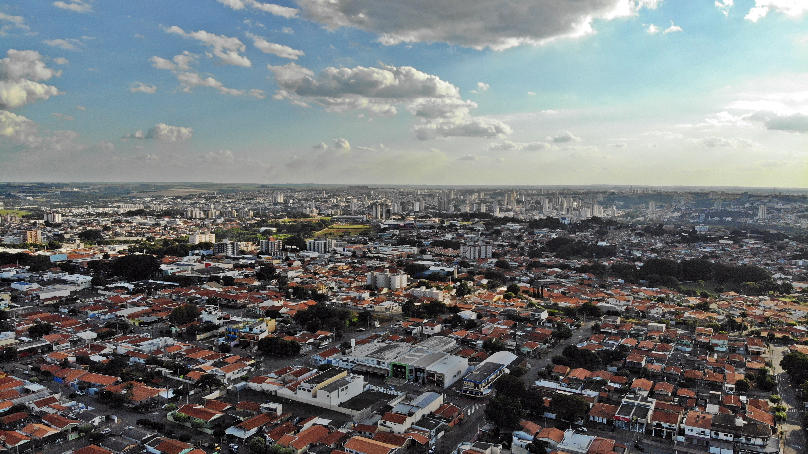

A Avenida Brasil é uma das principais vias da cidade de Americana, conectando diversos bairros e pontos turísticos importantes.
Saiba Mais
Com uma área de 100 mil metros quadrados, o Jardim Botânico possui cerca de 7.000 mudas de espécies arbóreas nativas e exóticas. Em sua área localiza-se a nascente do Córrego do Parque, que se estende pela Avenida Brasil, o cartão postal de Americana. Desempenha um papel essencial na conservação, propagação e difusão dos valores do mundo vegetal e na conservação da flora regional, através da educação ambiental.
Saiba mais
O principal casarão museu de Americana é o Museu Histórico e Pedagógico Municipal Dr. João da Silva Carrão, mais conhecido como Casarão do Salto Grande.
Saiba mais